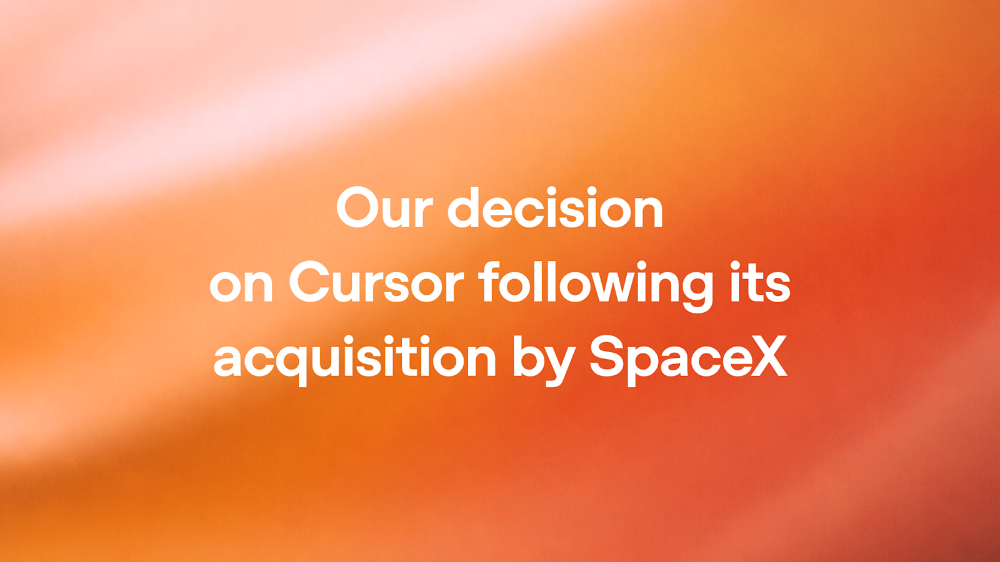

02 OpenAI 게시일 2026.08.28
OpenAI, SpaceX 인수 뒤 Cursor 계약 종료 수순

OpenAI가 Cursor와의 계약을 접는다. 배경은 SpaceX의 Cursor 인수다. 핵심은 현재 모델이 아니라 앞으로 나올 모델 접근 권한이다. AI 도구 시장에서 파트너십이 얼마나 빠르게 바뀔 수 있는지 보여주는 사례다.
핵심 브리핑
OpenAI는 SpaceX에 인수된 Cursor와의 모델 제공 계약을 종료하기로 했다. OpenAI는 Cursor와 맺은 맞춤 계약에 지배구조 변경 뒤 일정 기간 안에 해지할 수 있는 조항이 있다고 밝혔다. 그 기간 안에서 가장 늦은 시점에 해지를 실행하겠다고 설명했다.
OpenAI는 앞으로 나올 모델 Astra의 사용 책임도 이유로 들었다. AI 능력이 커지면서 자사 약관에 맞는 사용을 더 엄격히 관리해야 한다고 했다. 그래서 Cursor에는 미래 모델을 제공하지 않기로 결정했다.
OpenAI는 Cursor와 거의 4년 동안 협력했다고 밝혔다. Cursor 팀과 제품, 개발자 커뮤니티에 대한 존중도 함께 언급했다. 전환 과정에서 가장 큰 영향을 받는 쪽은 Cursor에서 OpenAI 모델을 쓰는 개발자들이라고도 했다. OpenAI는 이 전환을 지원하겠다고 밝혔다.
주요 트렌드
이 사건은 프런티어 모델 사업에서 계약 조건이 기술 못지않게 중요해졌다는 점을 보여준다. 모델 공급사는 고객사 인수합병까지 리스크로 본다. 특히 차세대 모델 접근권은 전략 자산이 됐다.
경쟁 구도도 더 선명해졌다. SpaceX가 Cursor를 인수한 뒤 OpenAI는 계약 종료를 택했다. 반면 관련 보도에서는 Anthropic이 Cursor와 협력을 유지하는 방향도 함께 거론됐다. 같은 AI 코딩 도구라도 어떤 모델사를 붙이느냐에 따라 제품 경쟁력이 크게 달라질 수 있다.
이번 조치는 현재 사용 경험보다 미래 공급선에 더 큰 영향을 준다. 기업 고객은 특정 벤더 모델에 깊게 묶인 도구를 쓸 때, 인수나 계약 변경이 생기면 대체 경로가 있는지 먼저 봐야 한다.
업계의 움직임
관련 보도에서는 Anthropic이 Cursor와 협력을 이어간다는 점이 함께 언급됐다. 같은 사건을 여러 매체가 다루면서, AI 코딩 도구 시장이 모델 공급사 선택에 따라 재편될 수 있다는 해석이 나왔다.
OpenAI는 전환 과정에서 개발자 지원을 약속했지만, 구체적 일정이나 대체 방안은 이번 글에서 공개하지 않았다.
시사점과 체크포인트
우리 회사가 외부 AI 도구를 고를 때는 기능 비교표만 보면 부족하다. 도구 안에서 어떤 모델을 쓰는지, 그 접근권이 계약상 얼마나 안정적인지 법무와 구매, 보안이 함께 봐야 한다.
특히 개발 생산성 도구는 내부 업무 흐름에 깊게 들어간다. 공급 모델이 바뀌면 성능, 요금, 보안 검토, 출력 품질이 한꺼번에 흔들릴 수 있다. 벤더가 다른 모델로 빠르게 바꿀 수 있는지 확인해야 한다.
체크포인트는 아래와 같다.
- 구매팀: 핵심 AI 기능의 하위 모델 공급사와 해지 조항 확인
- 개발플랫폼팀: 모델 교체 시 프롬프트와 워크플로 수정 범위 점검
- 보안팀: 차세대 모델 사용 약관과 데이터 반출 정책 재검토
- 현업부서: 특정 모델 의존 기능이 중단될 때 대체 수단 준비
이번 발표에는 계약 종료 시점, 현재 모델 지원 범위, Astra 출시 일정이 구체적으로 나오지 않았다. 실제 영향 시점은 추가 공지가 있어야 판단할 수 있다.
주요 용어
원문 정보
제목: Our decision on Cursor following its acquisition by SpaceX
게시일: 2026.08.28
출처 URL: https://openai.com/index/our-decision-on-cursor-following-its-acquisition-by-spacex